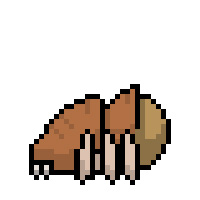
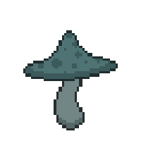
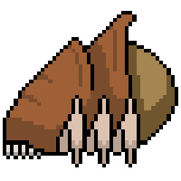

Su dura coraza le permite protegerse de los escombros que se desprenden del techo de las cuevas. Sus afiladas extremidades le permite cavar extensos túneles en la dura roca, lo que le permite sorprender a sus presas. Aunque no es muy resistente, puede ocultarse dentro de su coraza para resistir algo de daño.
Bestiario
Éstas son algunas de las criaturas que acechan en las profundidades de Spiliag...
Spider
Fungi
Su dura coraza le permite protegerse de los escombros que se desprenden del techo de las cuevas. Sus afiladas extremidades le permite cavar extensos túneles en la dura roca, lo que le permite sorprender a sus presas. Aunque no es muy resistente, puede ocultarse dentro de su coraza para resistir algo de daño.
Lord Ragno (Boss)
Su dura coraza le permite protegerse de los escombros que se desprenden del techo de las cuevas. Sus afiladas extremidades le permite cavar extensos túneles en la dura roca, lo que le permite sorprender a sus presas. Aunque no es muy resistente, puede ocultarse dentro de su coraza para resistir algo de daño.